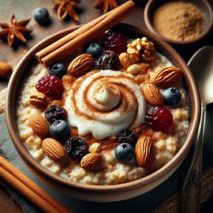

Make Ahead Oatmeal

I dunno when I started getting excited about oatmeal but honestly... lotus seed paste and chopped up dried green plum on top is a flavor combo that makes me so happy and I just want to find someone to share that with
Ingredients:
- 2 cups Rolled Oats
- 1 cup Steel Cut Oats
- 7 cups Water
Steps:
- Cook in the pressure cooker using the porridge button, and let cool
- Store in the fridge. In individual portions, if you like
- Heat and flavor each serving according to what you feel like that day
- See flavor options below. No matter what flavor I like to top it with a little sweet cream
Some flavor options:
- apricots, almonds, orange zest and honey
- a few dashes of nutmeg and brown sugar
- peaches, chopped candied ginger and maple syrup
- blueberries, coconut sugar and hempseeds
- lotus paste and chopped up dried green plums